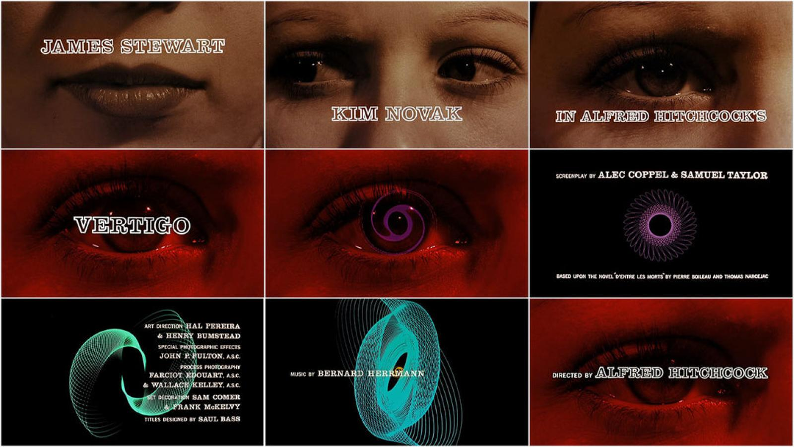

His Work
From creating innovative poster designs for movies, Bass would then move on to developing his impressive title sequences. One of his most famous and well-known sequences was from the movie ‘The Man with The Golden Arm’ which was released in 1955 (Figure 3.) “‘The man with the golden arm’ woke everybody up and said: “This is what the potential is for main titles. You thought this was just a throw-away kind of thing where we just put the type up and no one really designs it.” Christian Annyas, (2019), Saul Bass: The Man with the Golden Arm. The movie was about drug addiction. The arm represented the drug addict’s disjointed, disturbing nature in its shape which Bass has executed perfectly in the last segment of the movie title sequence.
Bass’s use of negative space and bold lines make this sequence very striking and appealing to the eye, as well as the inverted colour pallet and the variation of lines in each sequence. His use of solid block colour and use of bold typography makes it easier to attract the eye towards it. This obviously worked well for Bass’s movie posters, but it also worked extremely well for his movie title sequences. The viewer’s eye locked onto the shapes moving across the screen as they are navigated through the sequence. The negative space in the background meant that there was full attention being placed on the block shapes.

Another movie poster that Bass created was the 1958 ‘Vertigo’ which I previously talked about (figure 3). This poster was designed with the intention to make the viewer feel like they are spinning into a portal or dark hole. Just like the movie title sequence, the poster makes you feel like you are in a dream like state, floating into the unknown. Bass’s approach to the design was to deplete the action of ‘vertigo’ “a sensation of whirling and loss of balance, associated particularly with looking down from a great height” - eMedicineHealth, (2019), Vertigo Treatment, Medications, Causes & SymptomsThe. poster itself has a great balance between positive and negative space. There Is a sense of rhythm and movement within the design as the whirling geometric shape in the centre creates depth and variety.

Bass’s approach to the ‘Vertigo’ movie title sequence was quite the same, It begins with a sinister feel to it with a woman’s eye magnified on the screen, giving it a sense of intimidation and being quite up close and personal. The soundtrack that Bass included plays along with this sinister type story and really sets the scene. It isn’t hard to tell at form the imagery and sounds at the start of the sequence, that this movie isn’t one for the light-hearted! As the sequence continues, the portal like twirl spins in the eye of the subject focusing the viewers’ attention onto it. This leads the viewer into a long sequence of dream like imagery with twirling geometric shapes filling the screen with movement. There is also rhythm in each sequence with each geometric shape spinning in a variety of ways enchanting the view look deeper into the centre.
Bass did a very good job on mimicking the effect that vertigo has on people and how it makes you feel. There is also a sense of loneliness within the title sequence as the portal-like shape layered onto of black negative space makes the user feel like they are drifting through space and time.
Bass has always inspired people to think outside the box. “Where do ideas come from? From looking at one thing and seeing another. From fooling around, from playing with possibilities, from speculating, from changing, pushing, pulling, transforming, and if you’re lucky, you come up with something worth saving, using, and building on. That’s where the game stops and the work begin.”- Saul Bass. This shows that Bass was very open-minded and that he was inspired by things all around him. He truly wanted to encourage other artists and individuals to push their boundaries and provoke a different train of thought.
From my essay it is clear to see that Saul bass was a true innovator of design and a real influencer in diversifying your thoughts. From his quotes it seems like he wanted people to change their approach on design and look at things with a different perspective. His quote “Design is thinking made visual”- Saul Bass. Is quite inspiring as it entails us to open our mind to everything and to grasp inspiration from things, we may not consider good enough. “I want everything we do to be beautiful. I don’t give a damn whether the client understands that that’s worth anything, or that the client thinks it’s worth anything, or whether it is worth anything. It’s worth it to me. It’s the way I want to live my life. I want to make beautiful things, even if nobody cares.” – Saul Bass.